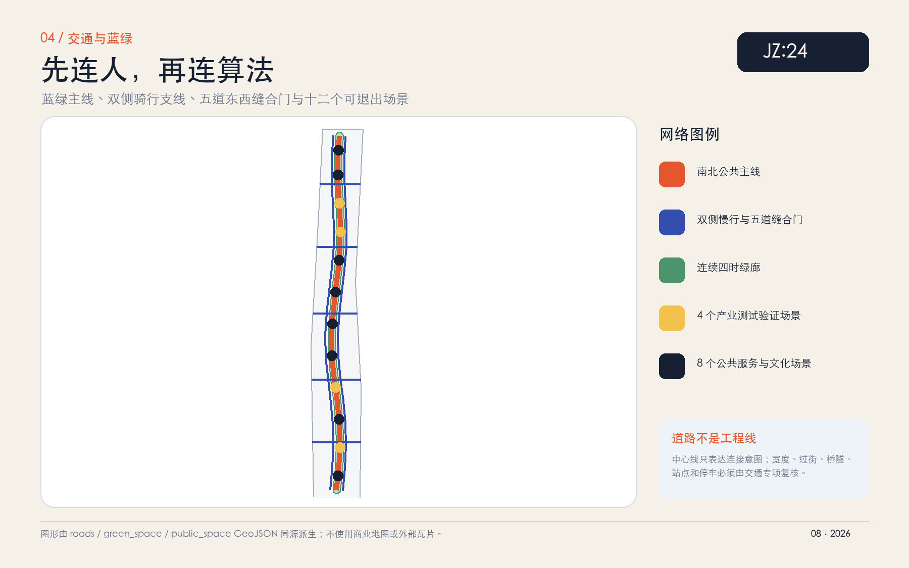
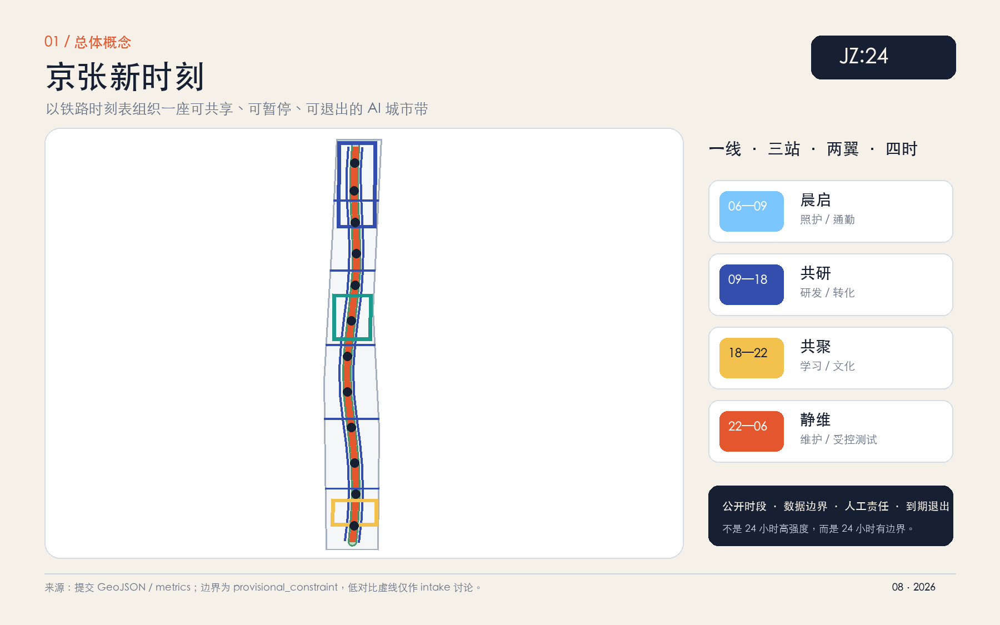
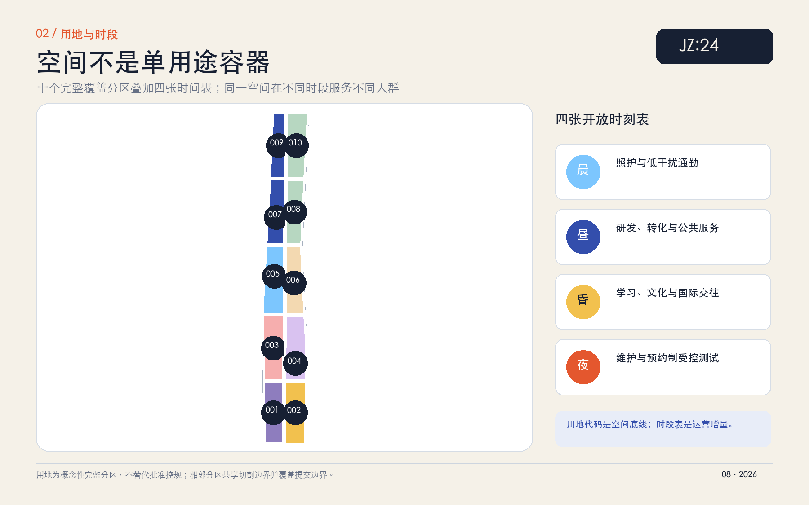
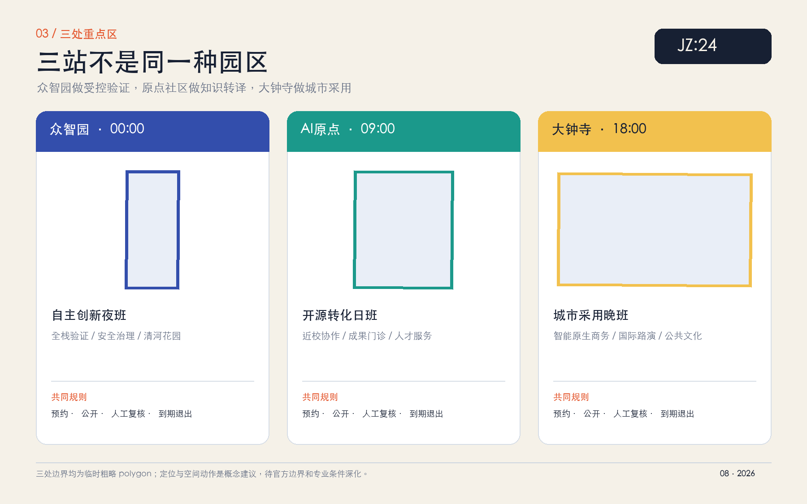
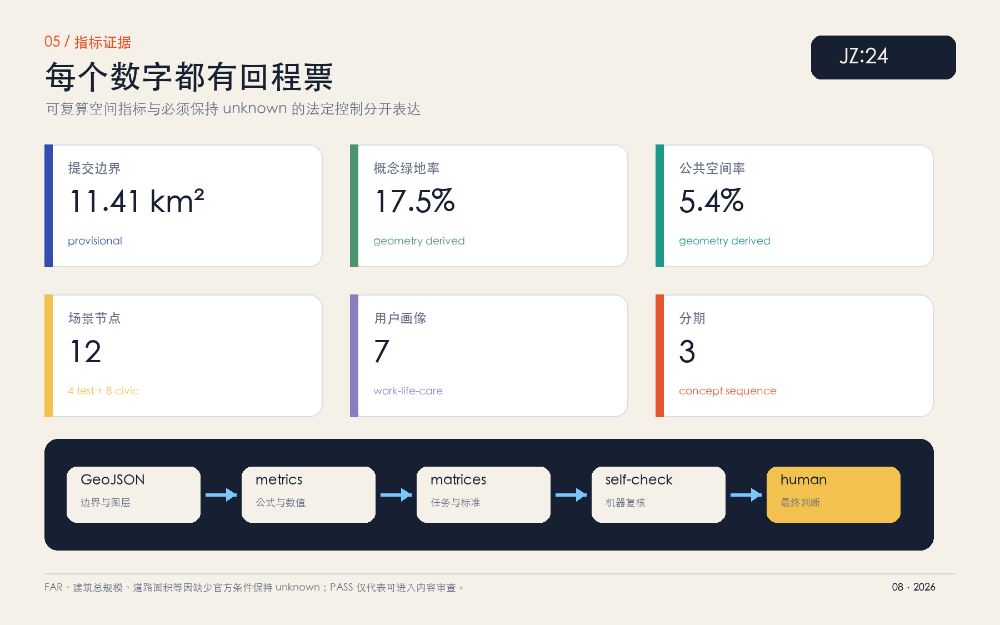

01 / 总览地图
一线、三站、两翼、四张时刻表
用地分区 · 交通慢行 · 蓝绿公共空间 · 建筑 · 更新项目 · AI 场景
核心指标
02 / 三层范围
战略研究、总体设计、重点区验证逐级传导
43.6 km²
统筹研究范围
用“研发—验证—转译—采用—复盘”组织三区两翼，比较全球案例并建立产业、人才、空间与治理接口。
约 11.4 km²
总体设计范围
以十个用地分区、四张时刻表、南北公共主线和五道东西缝合门表达控规深度城市设计概念。
3 areas
重点区域范围
众智园、AI原点社区、大钟寺分别承担受控验证、知识转译与城市采用，均保留官方 polygon 待补提示。
03 / 四时城市
不是 24 小时高强度，而是 24 小时有边界
晨启
照护、通勤、无障碍与生态校准；默认低干扰。
居民优先共研
研发、成果转化、企业服务与公共服务。
开放协作共聚
开发者课程、公共说明、文化与国际交往。
公众可见静维
设施维护和预约制受控试验；不扰民、可暂停。
自动到期04 / 重点区域
三班协作，而非三个同质园区
00:00
众智园 · 自主创新夜班
概念建议设置边缘模型兼容场、清河生态校准窗和安全治理值班室；夜间仅限预约制、低速、封闭或半封闭测试。
09:00
AI原点 · 开源转化日班
把近校研究、成果门诊、共享会议和开源贡献组织在步行尺度内；建筑只做可逆适配原型，不作拆改留结论。
18:00
大钟寺 · 城市采用晚班
以国际路演、智能原生商务与公共算法说明会形成城市客厅；站点四象限连通须交通与工程专项复核。
05 / AI 场景
12 张场景卡，4 个产业测试验证场景
06:00-09:00
SCENE-01 · 晨行无障碍陪伴
通勤者/行动不便者
公共服务场景 · 人工可暂停 · 到期退出06:00-09:00
SCENE-02 · 清河生态校准窗
研发团队/公众观察员
产业测试验证 · 人工可暂停 · 到期退出09:00-18:00
SCENE-03 · 共享会议室调度
初创团队/企业
公共服务场景 · 人工可暂停 · 到期退出09:00-18:00
SCENE-04 · 边缘模型兼容场
开发者/测评人员
产业测试验证 · 人工可暂停 · 到期退出09:00-18:00
SCENE-05 · 近校成果门诊
高校师生/创业者
公共服务场景 · 人工可暂停 · 到期退出18:00-22:00
SCENE-06 · 开源贡献值班室
开发者/市民
公共服务场景 · 人工可暂停 · 到期退出18:00-22:00
SCENE-07 · 公共算法说明会
居民/治理人员
公共服务场景 · 人工可暂停 · 到期退出18:00-22:00
SCENE-08 · AI创意晚市
创作者/游客
公共服务场景 · 人工可暂停 · 到期退出22:00-06:00
SCENE-09 · 机器人低速共行场
机器人团队/安全员
产业测试验证 · 人工可暂停 · 到期退出22:00-06:00
SCENE-10 · 城市设施维护窗
运维人员/居民代表
产业测试验证 · 人工可暂停 · 到期退出all_day
SCENE-11 · 多语公共导览
国际访客/居民
公共服务场景 · 人工可暂停 · 到期退出all_day
SCENE-12 · 时间银行互助站
居民/青年人才/老年人
公共服务场景 · 人工可暂停 · 到期退出06 / 交通慢行与蓝绿公共空间
先连人，再连算法

07 / 建筑与更新项目
九项可退出的概念工作包
近期 · 开表
规则和轻量界面先行
公共时刻牌、绿廊步行审计、清河校准窗和众智园受控验证窗；无责任人、无退出条件即不上线。
中期 · 换乘
共享建筑和重点区协同
成果门诊、开源值班室、大钟寺采用客厅和五道缝合门；建筑仅为可逆适配原型。
远期 · 成网
官方条件明确后系统深化
全球新时刻周、长期运营和空间网络；不构成政府投资、建设或活动承诺。
08 / 全球案例
学习机制，不复制形态
把 work-live-play-learn 与 living lab 转译为四时共享和受控试验。
把多项目共享校园转译为公共前台与共用服务底盘。
把研究、资本、创业和城市问题的邻近性转译为成果门诊。
从 innovation district 向 innovation community 转型，强调日常公共性。
把铁路遗产、文化机构和知识网络叠合为步行协作区。
以渐进更新和功能混合替代一次性推倒重来。
09 / 图纸
五张图共用一套数据




10 / 任务覆盖与自检状态
先通过证据门，再进入专业判断
结构化证据链
compliance_matrix 覆盖公告 1.3、1.4、1.5 与 agent.1—agent.6；standard_matrix 和 design_depth_matrix 连接正文、图层、指标、图纸、来源、假设和自检。
来源与假设
官方红线、重点区 polygon、控规、道路、现状建筑、权属、市政、文保和公共服务底数仍待补。所有空间与运营动作均为概念建议，可供专业团队深化。